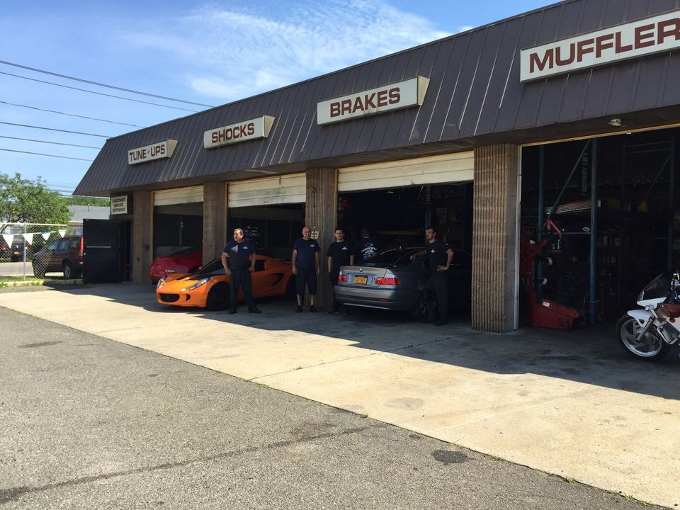

Gods Way Auto Repair

Wyandanch, NY
Family Business Assistant
(May 2019 - August 2019, May 2024 - August 2024)
A family-owned business owned and run by my father. Here, I worked as an assistant, helping him with running the business. Started working with him in May 2019 until August 2019 (Had to go back to school). During my summers, I would help him run the business as much as I can. Here I was tasked with:
- Oversaw paperwork, greeted customers, handled phone calls, and managed payments
- Managed employees in various situations and ensured completion of tasks
Stop and Shop
East Northport, NY
Cashier
(December 2020 - August 2021)

Add Description Here
- Ensured customers had a positive shopping experience, answered questions and concerns also built positive relationships with customers
- Pleasantly greeted customers and provided prompt and courteous service
Stop and Shop
East Northport, NY
Produce Clerk
(May 2022 - August 2022, May 2023 - August 2023)
Add Description Here
- Collaborated with coworkers during times when the store is the most crowded with shoppers
- Collaborated with coworkers to ensure that the store was freshly stock with products